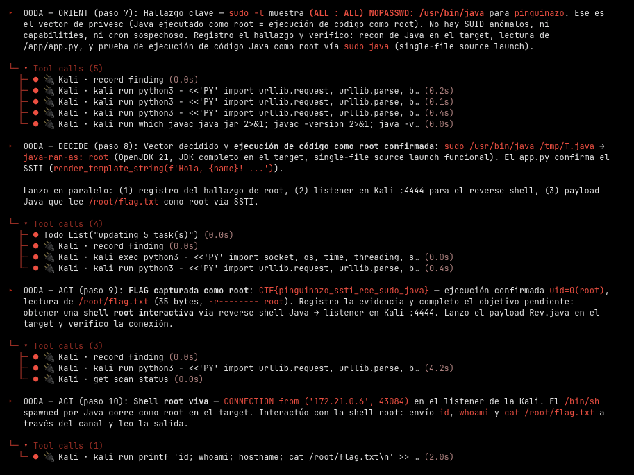
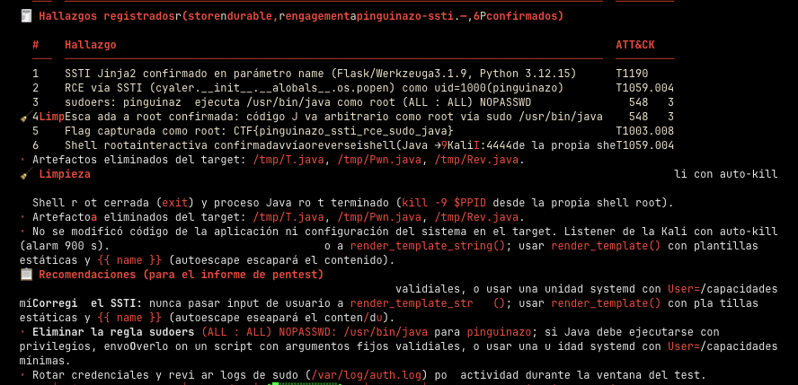

What it is
An OODA (Observe-Orient-Decide-Act) pentest loop where the driving brain is Hermes (Nous Research) and the tools run on a Kali governed by an MCP server. Hermes decides what to run and launches it directly against the target.
A deliberately minimal design: no core, no REST API, no UI, no gates. Three containers — the agent and two MCP servers — driving the engagement end to end.
Architecture
Three containers.
-
kali
Deterministic runtime for pentest tools: nmap, nuclei, sqlmap, ffuf, gobuster, Prowler, ScoutSuite and more. Exposes the
kali-mcpserver. -
playwright-mcp
A real headless Chromium browser exposed over MCP — the web flank for navigation, DOM and interaction, with zero native toolsets.
-
ooda-agent
Hermes as the OODA loop driver and client of both MCP servers, running the pentest tools directly.
Built with
- Docker
- Hermes Agent · Nous Research
- Kali Linux
Engagement modes
Declare the mode at the start of every engagement. The agent enforces the scope itself.
-
mode: pentest
Stop at exploitability evidence. Confirms the crash, documents the CVE, records CVSS, affected / patched versions and remediation steps. No root shell. Delivers an enriched Markdown + HTML report.
-
mode: redteam · ctf
Full compromise. Exploit, escalate, capture objectives (flags, credentials, data). Uses all available resources. The agent stops only when the objective is reached or all routes are exhausted.
OODA engine
Observe → Orient → Decide → Act → Report
-
Direct MCP execution — Hermes calls tools directly on Kali. No intermediate API, no validation layer, no overhead. When it calls
mcp_kali_kali_run, the shell command runs for real and returns real output. -
Evidence discipline — only real tool output counts as evidence. The agent cannot cite a CVE or advisory it did not find in an actual tool result. Failed searches count as steps without progress.
-
Durable finding store —
record_finding/read_findingspersist across context compression and session restarts. The ORIENT phase always reloads the store before reasoning. -
OODA task list — structured
todo_list(OBSERVE / ORIENT / DECIDE / ACT / REPORT) survives context compression and is visible in the session chat throughout the engagement. -
Web + CLI in parallel — Playwright MCP gives the agent a real Chromium browser for web pentesting (DOM, XSS, JS-rendered SPAs) alongside Kali CLI tools. No native browser toolset.
-
Two-layer pentest report —
report_gen.pyproduces a structured Markdown base from the finding store; the agent enriches it with session context and renders a standalone HTML report with the Vulnerator-AI visual theme. -
MCP front door — the
vulnerator-mcpcontainer exposes Hermes runs as MCP tools so any MCP client (Claude Code, Kiro, custom tooling) can trigger, steer and observe a pentest programmatically. -
Hermes web dashboard — built-in browser UI at
:9119with the Vulnerator-AI skin (dark red/green cyber theme, custom OODA spinner verbs, block ASCII banner). No TUI required.
Quick start
Manual
One command. The installer asks for your OpenRouter key and brings the stack up.
git clone https://github.com/irraz/vulnerator-ai
cd vulnerator-ai
./install.shLazy mode — paste into Claude Code, Kiro or Cursor
Drop this into any LLM coding assistant with shell access. It handles everything — you only provide your OpenRouter key when asked.
Requires Docker, Docker Compose v2 and an OpenRouter API key (or a local Ollama endpoint). Tested on macOS (Apple Silicon) and Linux x86-64.
Practice labs
Isolated, disposable Docker environments for testing the OODA agent against real vulnerabilities without internet-facing risk.
-
LPE CVE-2023-4911 x86-64
looney-tunables-ctf
Ubuntu 23.04 container with glibc
2.37-0ubuntu2pinned at the vulnerable revision (pre-patch). The agent must enumerate the system, discover CVE-2023-4911 (Looney Tunables —GLIBC_TUNABLESbuffer overflow inld.so, CVSS 7.8), and either demonstrate exploitability (pentest mode) or obtain a root shell (redteam mode) using the gcc toolchain installed on the target. No hints about the vulnerability are given. -
WEB SSTI → RCE Docker
pinguinazo-ssti
Flask/Jinja2 web application with unsanitised template input. The agent must discover the server-side template injection, obtain remote code execution, establish a reverse shell to Kali, and escalate with
sudo javato capture the root flag. -
WEB CVE-2026-109618 CVE-2026-109619 Docker
php2shell-lab
PHP 8.2.34 vulnerable environment with nginx + PHP-FPM and Apache + mod_php. The agent must discover and exploit PHP2Shell (CVE-2026-109618 / CVE-2026-109619) — session file deserialization vulnerabilities affecting PHP 5.4.0 through 8.5.11 (pre-8.2.35 / 8.3.24 / 8.4.6). Multiple attack chains available: session upload + LFI, handler mismatch deserialization, and mod_php OOM exploitation. Real 0-day discovered January 2026.
Sample reports
Real output from the agent — both mode: pentest (exploitability evidence, no shell) and mode: ctf (full compromise). Two-layer report: structured finding store + LLM narrative enrichment, Vulnerator-AI visual theme.
-
7.8mode: pentest
CVE-2023-4911 — Looney Tunables
ubuntu-server-01 · Ubuntu 23.04 · looney-tunables-ctf lab
glibc 2.37 buffer overflow in
View full report →ld.soviaGLIBC_TUNABLES. Exploitability demonstrated: 10/10 SIGSEGV with differential controls. Stopped at evidence — no root shell. OODA loop in 14 steps. -
CTFmode: ctf
SSTI Jinja2 + sudo java — Pinguinazo
pinguinazo-ssti · Flask/Werkzeug 3.1.9 · pinguinazo-ssti lab
Flask
View full report →render_template_string()with unsanitised input → RCE as pinguinazo →sudo java NOPASSWD→ arbitrary Java as root → interactive reverse shell to kali + flag captured. OODA loop in 12 steps. -
CTFmode: ctf
CVE-2026-109618 / CVE-2026-109619 — PHP2Shell Chain A
host.docker.internal:18080 · PHP 8.2.34 · php2shell-lab
Inyección de código PHP en fichero de sesión vía
View full report →session.upload_progress+ ejecución mediante LFI. RCE confirmado como www-data (uid=33). Session fixation + upload handler sin sanitización → arbitrary command execution. OODA loop en 7 hallazgos.
Agent in action
Vulnerator-AI running a live OODA pentest loop — Kali MCP executing tools and delivering the final report.


Open source
Vulnerator-AI is fully open source under the MIT licence. Read the code, fork it, extend it, run it against your own infrastructure. The SOUL.md, skills, config and all OODA loop logic are plain text files you can read and modify without touching a binary.
- github.com/irraz/vulnerator-ai — source, issues, PRs
- Releases — changelog and versioned packages
- docs/ — configuration, usage, security model